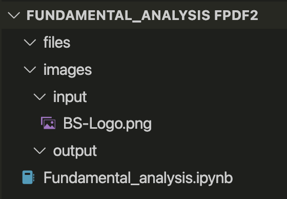
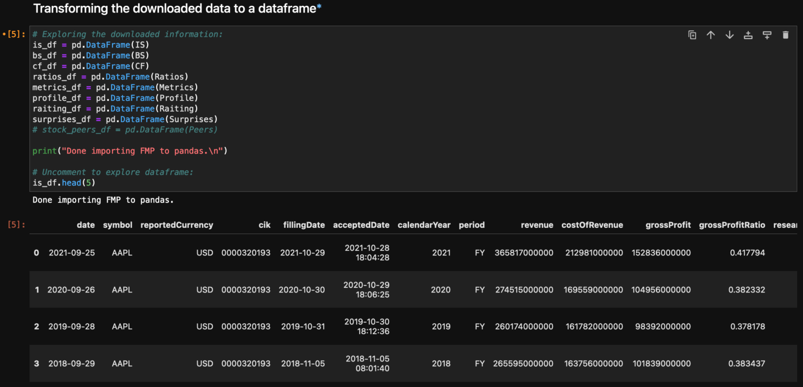

Table of Contents
In this tutorial, I'll show you how to create automated financial reports using Python. We'll use APIs to fetch real financial data, perform analysis, create visualizations, and generate professional PDF reports.
If you want to jump straight to the GitHub repository, click here. The complete code is also available at the end of this post.
The goal of the financial report
The main objective is to create a comprehensive financial analysis tool that can:
- Automatically fetch financial data from APIs
- Perform fundamental analysis calculations
- Generate interactive charts and visualizations
- Create professional PDF reports
- Provide actionable investment insights

The script allows you to select any public company by ticker symbol
This automated approach saves hours of manual data collection and analysis, while ensuring consistency and accuracy in financial reporting.
What the python script does
The Python script performs several key functions to create comprehensive financial reports:
1. Data Collection
The script uses the Financial Modeling Prep API to fetch real-time financial data including:
- Income statements
- Balance sheets
- Cash flow statements
- Stock price data
- Financial ratios
Financial Modeling Prep provides comprehensive financial data
2. Data Processing and Analysis
Using pandas and NumPy, the script processes raw financial data to calculate:
- Financial ratios (P/E, ROE, Debt-to-Equity)
- Growth rates and trends
- Performance metrics
- Risk assessments

Data exploration and analysis using pandas DataFrames
3. Visualization Creation
The script generates interactive charts using Plotly:

Income statement trends

Balance sheet analysis
4. PDF Report Generation
Using FPDF2, the script creates professional PDF reports with:
- Executive summary
- Financial data tables
- Charts and visualizations
- Analysis and recommendations
FPDF2 library for professional PDF generation
Coding the report
Let's dive into the code structure and implementation details.
Project Structure
The project is organized into several modules for better maintainability:

Clean project structure with separate modules
API Configuration
First, you'll need to set up your API key from Financial Modeling Prep:

API key setup for accessing financial data
Main Script Implementation
Python
import pandas as pd
import numpy as np
import plotly.graph_objects as go
import plotly.express as px
from fpdf import FPDF
import requests
import json
from datetime import datetime
import os
class FinancialReportGenerator:
def __init__(self, api_key):
self.api_key = api_key
self.base_url = "https://financialmodelingprep.com/api/v3"
def fetch_company_data(self, ticker):
"""Fetch comprehensive company financial data"""
endpoints = {
'income_statement': f'/income-statement/{ticker}',
'balance_sheet': f'/balance-sheet-statement/{ticker}',
'cash_flow': f'/cash-flow-statement/{ticker}',
'ratios': f'/ratios/{ticker}',
'profile': f'/profile/{ticker}'
}
data = {}
for key, endpoint in endpoints.items():
url = f"{self.base_url}{endpoint}?apikey={self.api_key}"
response = requests.get(url)
if response.status_code == 200:
data[key] = response.json()
else:
print(f"Error fetching {key}: {response.status_code}")
return data
def calculate_financial_metrics(self, data):
"""Calculate key financial metrics and ratios"""
income_statement = pd.DataFrame(data['income_statement'])
balance_sheet = pd.DataFrame(data['balance_sheet'])
# Calculate growth rates
income_statement['revenue_growth'] = income_statement['revenue'].pct_change()
income_statement['net_income_growth'] = income_statement['netIncome'].pct_change()
# Calculate efficiency ratios
metrics = {
'gross_margin': income_statement['grossProfit'] / income_statement['revenue'],
'operating_margin': income_statement['operatingIncome'] / income_statement['revenue'],
'net_margin': income_statement['netIncome'] / income_statement['revenue'],
'roe': income_statement['netIncome'] / balance_sheet['totalStockholdersEquity'],
'roa': income_statement['netIncome'] / balance_sheet['totalAssets']
}
return metrics
def create_visualizations(self, data, metrics):
"""Generate interactive charts and visualizations"""
income_statement = pd.DataFrame(data['income_statement'])
# Revenue and profit trends
fig_income = go.Figure()
fig_income.add_trace(go.Scatter(
x=income_statement['date'],
y=income_statement['revenue'],
mode='lines+markers',
name='Revenue',
line=dict(color='blue', width=3)
))
fig_income.add_trace(go.Scatter(
x=income_statement['date'],
y=income_statement['netIncome'],
mode='lines+markers',
name='Net Income',
line=dict(color='green', width=3)
))
fig_income.update_layout(
title='Revenue and Net Income Trends',
xaxis_title='Date',
yaxis_title='Amount (USD)',
template='plotly_white',
height=500
)
return fig_income
def generate_pdf_report(self, ticker, data, metrics, charts):
"""Generate comprehensive PDF report"""
pdf = FPDF()
pdf.add_page()
pdf.set_font('Arial', 'B', 16)
# Title
pdf.cell(0, 10, f'Financial Analysis Report - {ticker}', ln=True, align='C')
pdf.ln(10)
# Executive Summary
pdf.set_font('Arial', 'B', 12)
pdf.cell(0, 10, 'Executive Summary', ln=True)
pdf.set_font('Arial', '', 10)
# Add financial data tables
self._add_financial_table(pdf, data['income_statement'], 'Income Statement')
self._add_financial_table(pdf, data['balance_sheet'], 'Balance Sheet')
# Save charts as images and add to PDF
for chart in charts:
chart_path = f'temp_chart_{ticker}.png'
chart.write_image(chart_path)
pdf.add_page()
pdf.image(chart_path, x=10, y=10, w=190)
os.remove(chart_path)
# Save PDF
pdf_path = f'{ticker}_financial_report_{datetime.now().strftime("%Y%m%d")}.pdf'
pdf.output(pdf_path)
return pdf_path
Data Analysis Examples
Here are some examples of the financial data tables generated:

Nominal financial values

Percentage analysis
Running the script to create a report
Once you have the code set up, running the script is straightforward:
Python
# Initialize the report generator
generator = FinancialReportGenerator(api_key='your_api_key_here')
# Fetch data for a company (e.g., Apple)
ticker = 'AAPL'
company_data = generator.fetch_company_data(ticker)
# Calculate financial metrics
metrics = generator.calculate_financial_metrics(company_data)
# Create visualizations
charts = generator.create_visualizations(company_data, metrics)
# Generate PDF report
report_path = generator.generate_pdf_report(ticker, company_data, metrics, [charts])
print(f"Financial report generated: {report_path}")

Script execution showing the report generation process
The script will automatically fetch the latest financial data, perform the analysis, create visualizations, and generate a comprehensive PDF report.
Some example financial reports
Here are some examples of the financial analysis and visualizations the script generates:
Financial Ratio Analysis
The script calculates and displays key financial ratios:

Efficiency ratios analysis

Market valuation ratios
Portfolio Diversification Analysis
The script can also analyze portfolio composition and diversification:

Portfolio diversification analysis showing sector allocation
Interactive Data Exploration
The script also generates Jupyter notebook outputs for interactive analysis:
Data exploration

Statistical analysis
Trend analysis
Improvements to the financial report
There are several ways to enhance this financial reporting system:
1. Enhanced Data Sources
- Integrate multiple API sources for data validation
- Add alternative data sources (news, social sentiment)
- Include economic indicators and market data
- Add cryptocurrency and commodity price feeds
2. Advanced Analytics
- Machine learning models for price prediction
- Risk assessment algorithms
- Peer comparison analysis
- Monte Carlo simulations for scenario analysis
3. Interactive Dashboard
- Web-based dashboard using Streamlit or Dash
- Real-time data updates
- Interactive charts and filters
- User authentication and saved reports
4. Report Customization
- Custom report templates
- Automated email delivery
- Multiple output formats (Excel, PowerPoint)
- Scheduled report generation
5. Data Quality and Validation
- Data quality checks and alerts
- Historical data validation
- Error handling and logging
- Data source reliability scoring
Final thoughts
Creating automated financial reports with Python is a powerful way to streamline investment analysis and decision-making. This tutorial covered the essential components:
- Data Collection: Using APIs to fetch real-time financial data
- Analysis: Calculating key financial metrics and ratios
- Visualization: Creating informative charts and graphs
- Reporting: Generating professional PDF reports
The beauty of this approach is its scalability and automation. Once set up, you can generate comprehensive financial reports for any public company with just a few lines of code.
Whether you're a financial analyst, investor, or just someone interested in understanding company finances better, this tool provides a solid foundation for data-driven investment decisions.
I encourage you to experiment with the code, add your own analysis techniques, and customize the reports to fit your specific needs. Financial analysis is both an art and a science, and having the right tools makes all the difference.
If you found this tutorial helpful or have questions about implementation, feel free to reach out. I'm always happy to discuss financial analysis and Python programming!
Get in touch!
I'm currently open to work and I'd be happy to chat.
Feel free to reach out if you are interested in what I can bring
to your project or team.